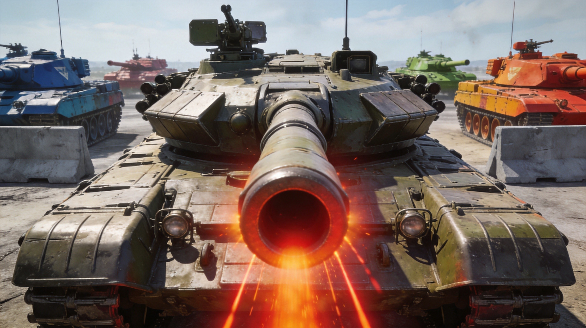
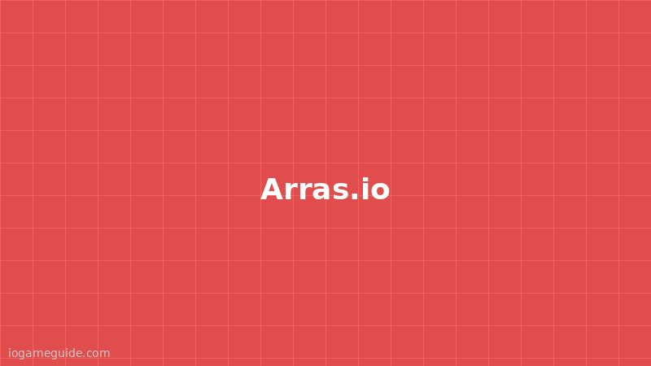

Introduction
Arras.io is a top‑down, multiplayer tank arena game that pits you against other players and AI‑controlled polygons. Developed as a fan‑made successor to Diep.io, it expands the formula with dozens of tank classes, a deep stat‑upgrade system, and a variety of game modes (Free‑For‑All, Teams, Maze, Assault). Each match takes place on a vast, scrolling map where you collect experience points from killing geometric shapes, harvest the resulting loot, and evolve into powerful configurations such as the Sniper, Destroyer, or hybrid classes. The game’s responsive controls (mouse aim, click to fire, WASD movement) and the constant need to adapt to new enemy tactics keep the gameplay fresh. With regular updates adding new polygons, tank abilities, and limited‑time events, Arras.io maintains a thriving community of casual and competitive players.
Getting Started

Open your browser and navigate to https://arras.io/. The front page lets you choose a server region and then pick a game mode. In Free‑For‑All you compete alone; Teams splits you into two or four factions; Maze places you inside a labyrinth; Assault challenges a team to breach a defended base. After selecting a mode, click “Play” and you’ll spawn as a level 1 Basic Tank in the centre of the map. Controls are simple: - WASD or arrow keys move the tank. - Mouse position determines aim direction. - Left‑click (or spacebar) fires your main weapon. - Right‑click or shift fires an alternate shot if your tank supports it. - E or middle‑click toggles auto‑fire for drones or minions. Your first goal is to collect XP by destroying low‑level polygons: Squares give 10 XP, Triangles 20 XP, Pentagons 50 XP, and Hexagons 150 XP. As you level up, a menu appears offering new tank classes and stat upgrades (Health, Damage, Reload, Speed, etc.). Choose a path that fits your playstyle, then start hunting higher‑value targets and rival players.
Basic Tips
1. Focus on polygons first. Squares and Triangles are safe XP sources; they respawn quickly and you can clear a cluster without exposing yourself to player fire. 2. Upgrade reload and damage early. Reload determines how fast you can fire; damage boosts each bullet’s lethality. Balancing these two lets you eliminate enemies faster than they can retreat. 3. Stay near cover. The map contains numerous static obstacles and destructible boxes. Tuck yourself behind a polygon or wall when reloading to avoid being an easy target. 4. Watch your health bar. If it drops below 25 %, retreat to a safe zone, collect a health pickup (often a red square), and let your regeneration kick in. Overextending leads to quick death. 5. Learn the tank class that fits your role. A Sniper excels at long‑range harassment, a Destroyer delivers heavy single‑shot bursts, and a Drone controller can dominate in close quarters. Experiment in low‑risk sessions to discover which feels natural.
Advanced Strategies

1. Map control and zone denial. In Teams or Maze modes, claim key choke points such as the central pentagon spawn or the narrow corridors. By holding these areas you funnel enemies into your line of fire, deny them resources, and force opponents to over‑extend. 2. Hybrid tank builds. Combine a high‑damage, low‑reload setup with a secondary drone branch. This gives you both a powerful main cannon and a swarm of auto‑targeting minions that can distract and absorb enemy fire. 3. Predictive aiming and bullet banking. Learn to fire slightly ahead of a moving target, accounting for its velocity and your bullet speed. In maps with walls, use ricochets to hit opponents behind cover; the angle of incidence equals the angle of reflection. 4. Resource prioritization. When you encounter a hexagon cluster, prioritize killing the highest‑value shape first, because each hexagon grants a large XP boost and often drops a powerful upgrade token (e.g., +5 % bullet speed). Ignoring them wastes potential momentum.
Pro Tips

1. Minimap awareness. Keep an eye on the mini‑map in the corner; a sudden cluster of red dots signals a player rush, allowing you to reposition or set an ambush before the threat arrives. 2. Dynamic reload cycling. As soon as you fire, begin moving your tank in a circular pattern while the reload bar fills. This makes you a moving target and reduces the chance of being hit during the vulnerable reload window. 3. Controlled aggression. When you have a health advantage, press the attack, but break off after the first kill to avoid over‑committing. This “hit‑and‑run” rhythm keeps your death count low while maximizing score. 4. Utilize bullet‑spam as a shield. High‑reload tanks can flood a lane with bullets, creating a temporary barrier that blocks incoming projectiles and forces enemies to retreat.
Conclusion
Arras.io blends fast‑paced action, strategic depth, and endless progression into a single, browser‑based arena. Whether you prefer sniping from a distance, overwhelming foes with drones, or mastering the art of the perfect bullet bank, there’s a playstyle that fits you. Jump into the game today, experiment with different tank builds, and watch your score climb as you climb the ranks of the arena’s most feared combatants.